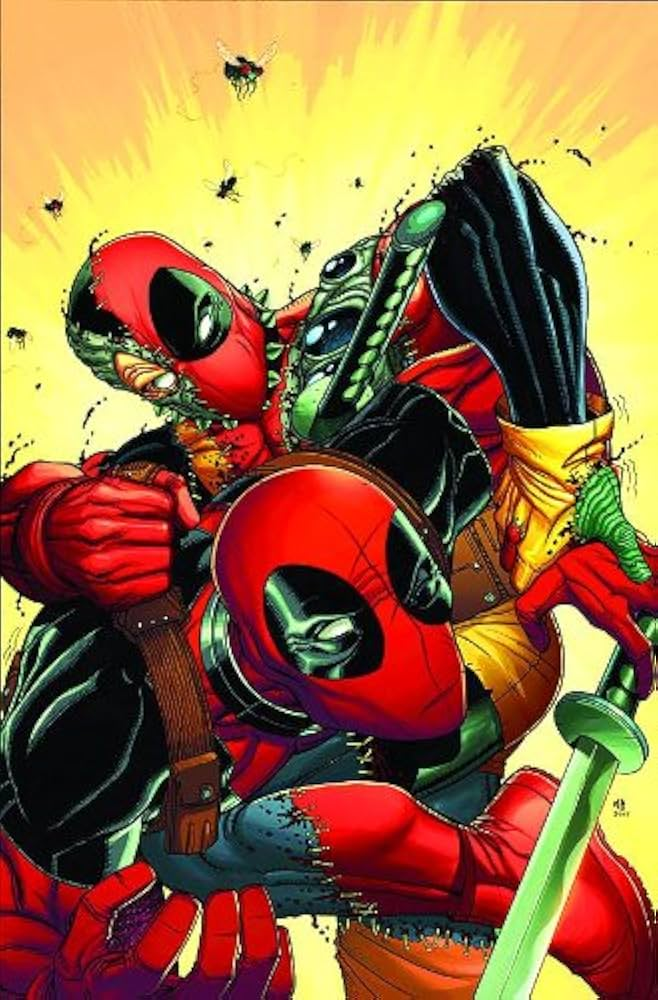
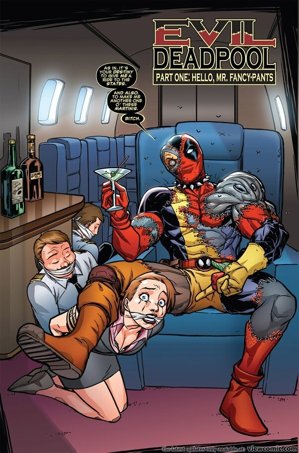
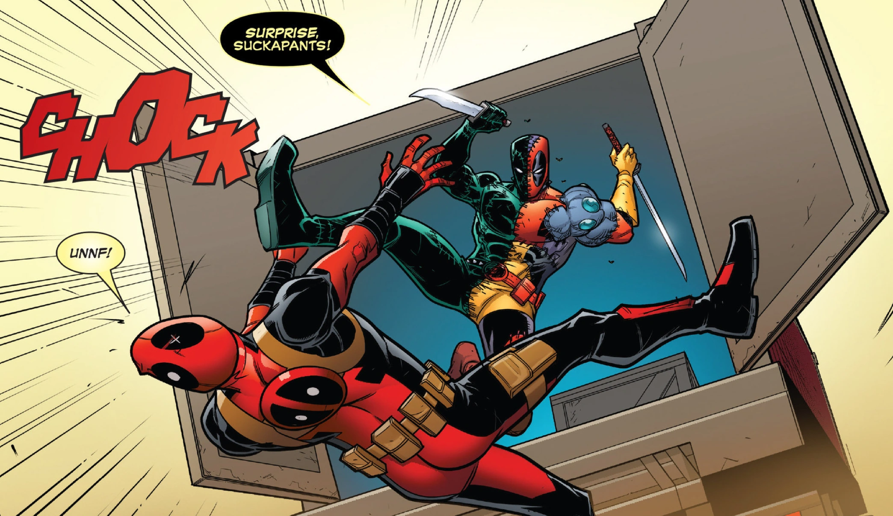
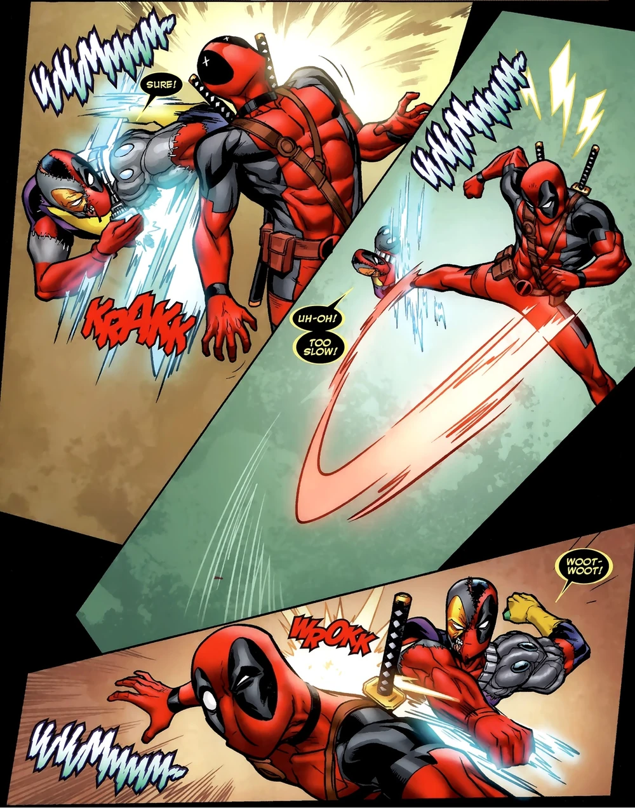
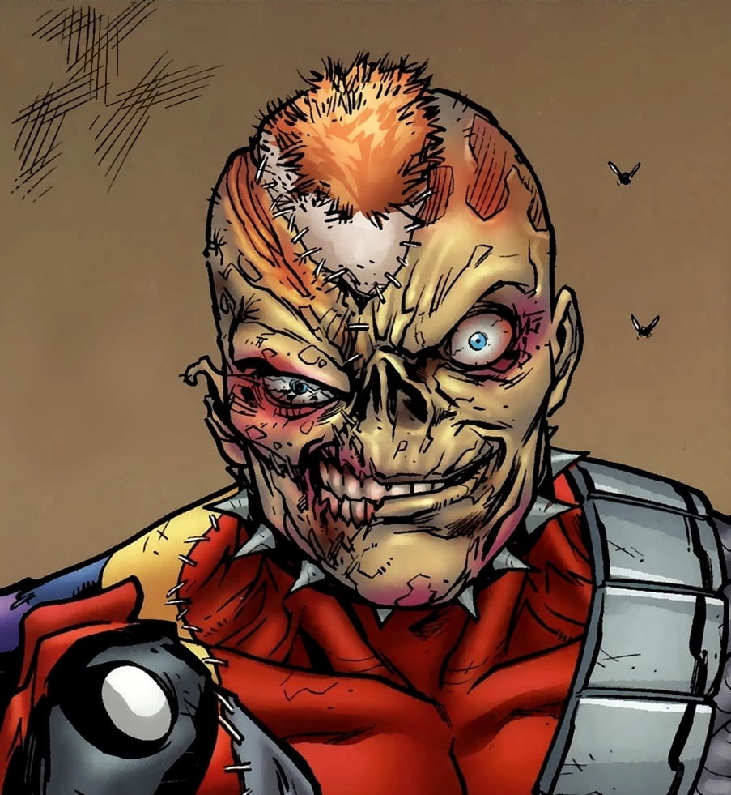
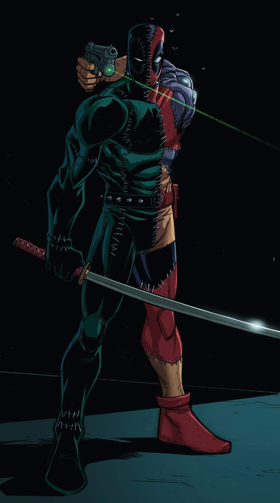
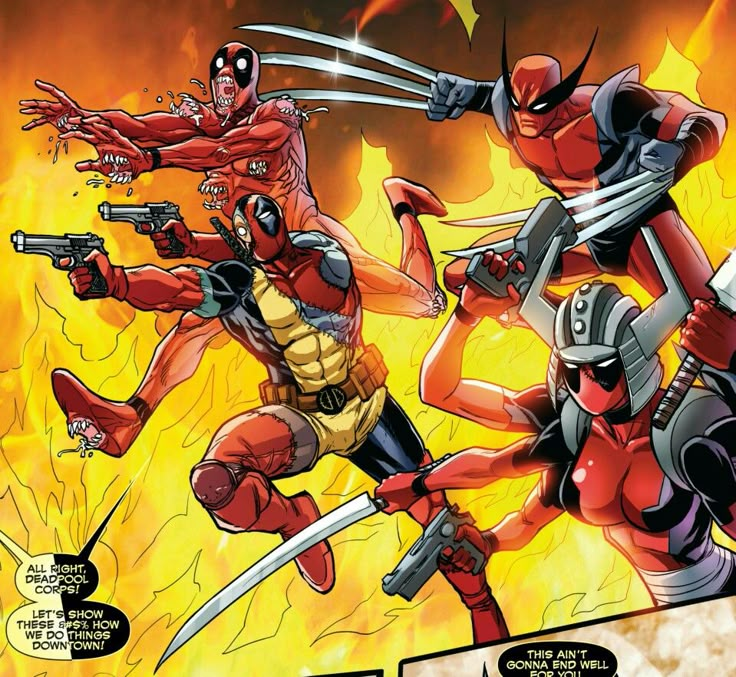
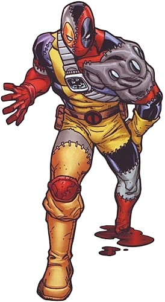
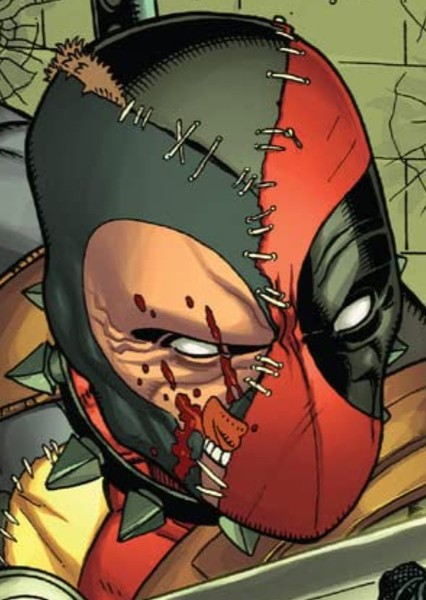
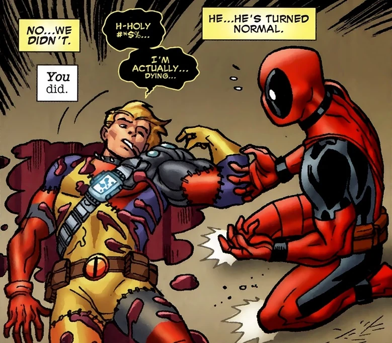

Evil Deadpool (Terre-616)

Origines :
Les origines de l'être nommé « Evil Deadpool » sont liées à Ella Whitby, une psychiatre britannique obsédée par le mercenaire Deadpool.
Au fil des années, elle avait collecté un grand nombre de parties du corps de Deadpool que ce dernier avait perdues durant ses aventures, et les a conservées dans son congélateur.
Lorsque Deadpool les a découvertes, il les a jetées à la poubelle avec dégoût.
Les morceaux ont fini par décongeler et, comme ils possédaient tous le facteur de guérison de Deadpool, ont fini par re-fusionner entre-eux pour ne former qu'un seul être.
Ce Deadpool maléfique a détourné l'avion privé d'un homme d'affaires américain et s'est rendu aux États-Unis, à peu près en même temps que le Deadpool original.
Les deux se sont croisés pour la première fois alors que le Deadpool maléfique avait fait exploser le restaurant de chimichangas préféré de Deadpool et se sont battus jusqu'à épuiser toutes leurs munitions.
Les deux Deadpool ont alors programmé un second round à Canarsie Park.
Ce deuxième affrontement explosif a attiré l'attention de Captain America, qui est arrivé sur les lieux juste après la fuite du Deadpool maléfique.
Alors que Deadpool repoussait Captain America et tentait de le convaincre de l'existence de son double maléfique, ce dernier entreprit de lui montrer ce que le monde pensait réellement de lui.
Pour ce faire, il se rendit chez Mister Negative afin de trouver le « coup le plus sordide, le plus louche et le plus odieux », qui consistait à kidnapper les enfants du chef de la police de New-York, avec l'intention de faire ce que le vrai Wade Wilson ne ferait jamais : tuer un enfant.
Au même moment, le vrai Deadpool kidnappait un enfant en plein Times Square et menaça de le tuer, persuadé que ce serait le genre d'action que le Deadpool maléfique pourrait faire.
Cette menace inciterait le faux Deadpool à attaquer le vrai pour lui avoir volé la vedette, le forçant à abandonner ses plans et à révéler son existence au monde.
Naturellement, le Deadpool maléfique s'attendait à ce que Deadpool agisse ainsi et ne tomba pas dans le piège.
Le Deadpool maléfique attira alors Deadpool et le chef de la police dans un entrepôt situé au 615 South Street, où étaient retenus les enfants kidnappés.
Après avoir secouru les enfants, les deux Deadpool se firent face.
Captain America arriva sur les lieux, après que le chef de la police ne l'ait emmené sur place.
Juste avant que la police n'ouvre le feu sur le Deadpool maléfique, une mystérieuse fléchette chargée d'un sérum tout aussi mystérieux l'atteignit, neutralisant son facteur de guérison, et provoquant ainsi sa mort par balles.
Deadpool, voulant découvrir comment son double avait pu mourir, utilisa le téléporteur de ce dernier pour s'échapper en emportant son cadavre avec lui, qu'il finira par abandonner.










Capacités :
En tant que double-maléfique de Deadpool, Evil Deadpool possède les même capacités que lui.
Il possède donc une endurance extraordinaire, ainsi qu'une agilité, une dextérité et une force surhumaines.
Il possède également un facteur de guérison sur-développé lui permettant de régénérer n'importe quelle blessure, même mortelle (décapitation, démembrement etc.).
Apparence :
Evil Deadpool possède une apparence grotesque et dérangeante, inspiré de Deadpool, mais de façon profondément déformée et mutilée.
Son corps est constitué de différents morceaux de chair et de membres de Deadpool, assemblés de façon chaotique par son facteur de guérison.
Cet assemblage lui donne un effet « Frankenstein », avec des coutures visibles, des greffes de peau irrégulières et des proportions déséquilibrées (il possède par exemple deux bras droit, son bras gauche étant un bras droit placé à l'envers).
Son costume est lui-même un mélange des différents costumes de Deadpool.
Il possède souvent des morceaux de sa combinaison rouge, d'autres de sa combinaison jaune, un morceau de bras cybernétique, un masque parfois incomplet laissant apparaître sa peau nécrosée, et parfois il porte également des morceaux de combinaison noire.
Comme Deadpool, Evil Deapool est lourdement armé et transporte fréquemment des katanas, des armes à feu, ainsi que de l'équipement militaire.